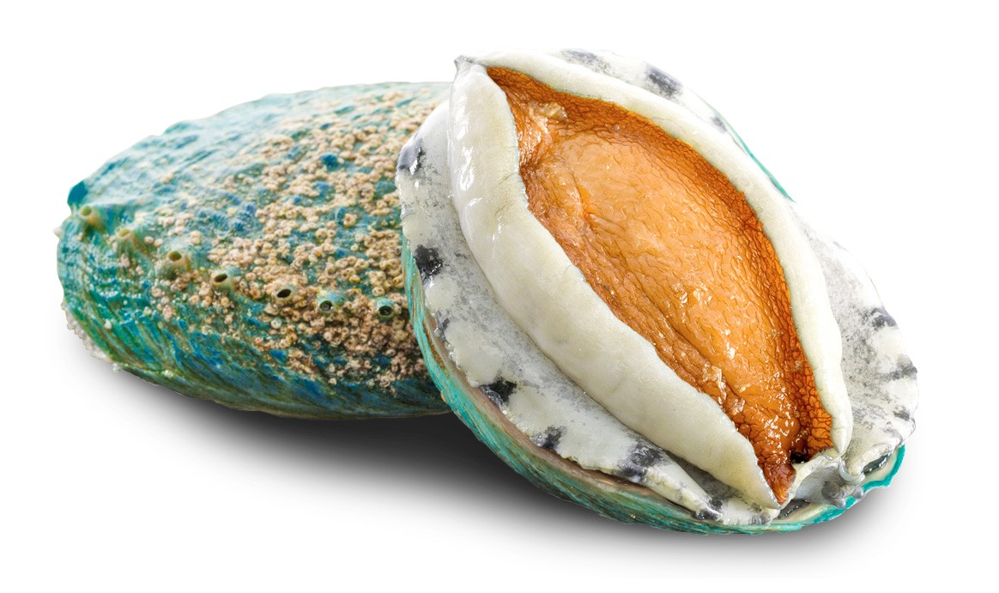
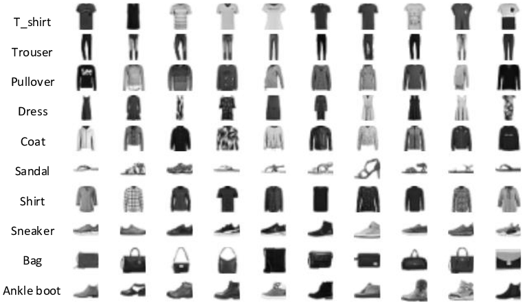
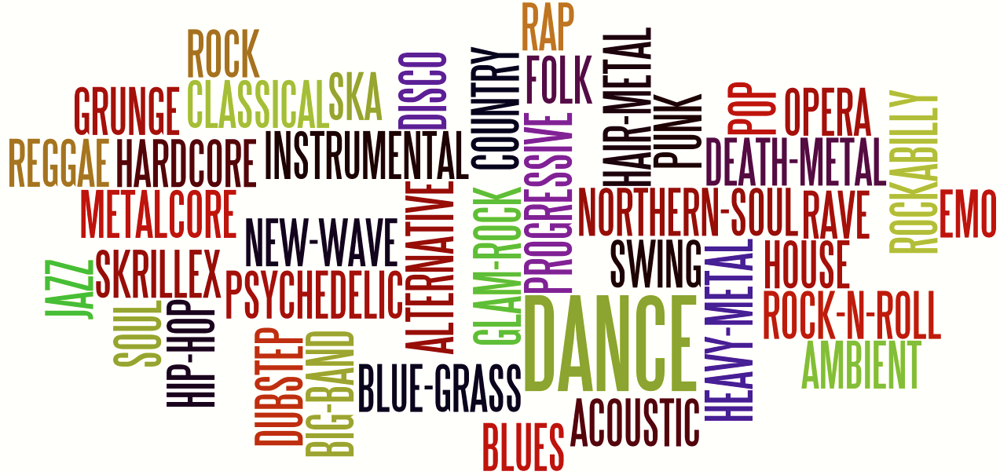

Fall 2023
This project aims to perform sentiment analysis using Python,
leveraging machine learning techniques to analyze positive and negative reviews.
The machine learning model is trained on the Flipkart.csv dataset,
allowing it to classify reviews and determine their sentiment.

This project utilizes nonparametric statistics and R programming to predict whether patients have diabetes or not.
The analysis is based on relevant medical data, and the nonparametric statistical methods employed offer robust predictions
without assuming specific distributions in the underlying data.
The Diabetes dataset got from the Kaggle project

This project utilizes the linear regression method in R to estimate the weight of different penguin types in Antarctica.
The analysis is performed using the Palmer Penguins dataset ,
which provides comprehensive information about various penguin species.

This project employs different machine learning methods (Multiple linear regression, Decision Tree, Random Forest)
to predict the age (rings) of abalones.
The analysis is conducted using a abalone dataset sourced from the UCI Machine Learning Repository.

This project leverages machine learning techniques in R to identify different types of fashion costumes.
The analysis is conducted using the Fashion MNIST dataset provided by Zalando Research,
available at here .

This project utilizes the bootstrap method in Python to identify the genre of songs.
By applying resampling techniques, we aim to enhance the robustness of genre classification models for a more accurate and reliable prediction of song genres.
This project utilizes the R programming language to perform Exploratory Data Analysis (EDA) on global emissions. The analysis includes the creation of multiple visualizations to better understand and communicate patterns and trends in emission data.
The dataset is sourced from here
This project utilizes the R programming language to conduct Exploratory Data Analysis (EDA) on film locations in San Francisco.
The dataset is sourced from the San Francisco government and can be found at
here .

This project involves creating a dashboard using Tableau to visualize insights from the Airbnb dataset in New York City.
The dataset is sourced from here ,
and the dashboard aims to provide interactive and informative visualizations for better understanding and exploration of Airbnb listings in the city.